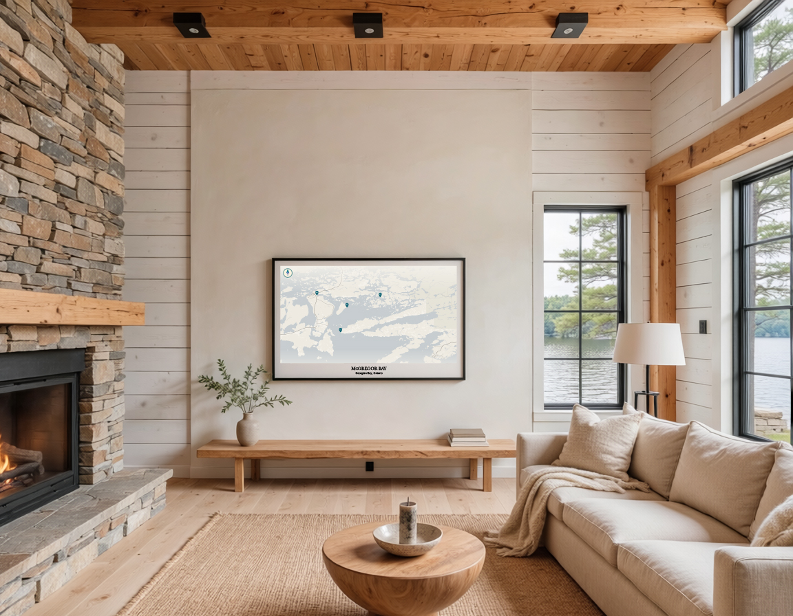

They're where summers are spent, traditions begin, and memories are made. They're where the first coffee of the morning tastes better, where the kids learned to swim, where the fish always seem to bite, and where everyone gathers at the end of the day.
At Lakelines, we believe those places deserve more than a spot on a map.
We create beautifully designed products inspired by the lakes that mean the most to you. Using the real shoreline, name, location and coordinates of your lake, every design is made specifically for you and printed on premium drinkware, notebooks, gifts and home essentials.
Whether it's the family cottage, a favourite fishing lake, or the place you've returned to for generations, Lakelines helps you keep that connection close—at home, at work, or wherever life takes you.
Because the places we love deserve a place in our everyday.
